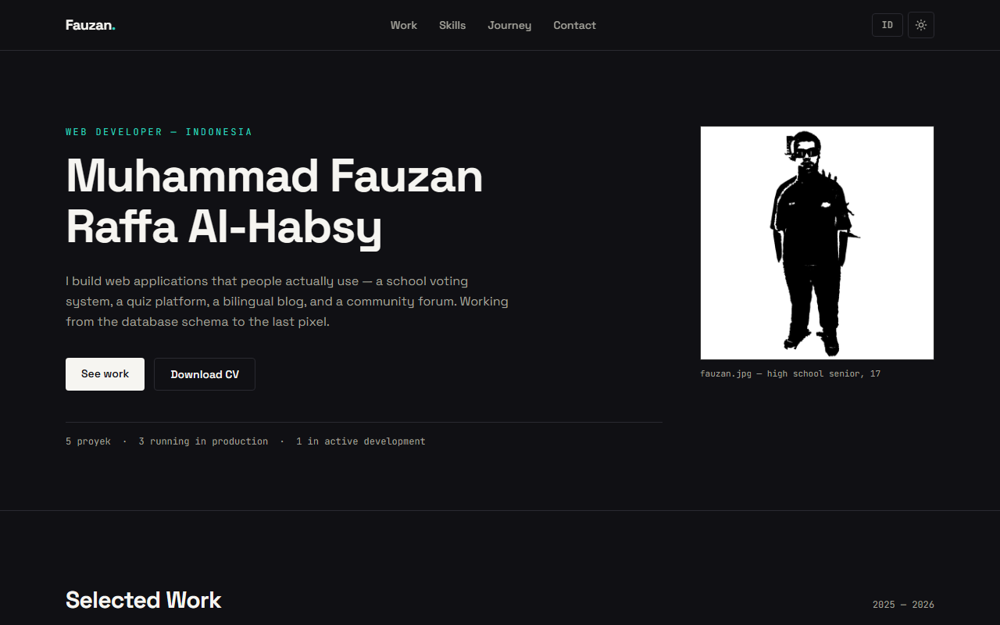

Semua proyek / Portfolio
Situs portofolio pribadi Muhammad Fauzan Raffa Al-Habsy - web developer dari SMKN 1 Tenggarong. Tailwind CSS v4, sepenuhnya statis, dwibahasa, PWA-ready.

Single page dengan bagian proyek terpilih, keahlian, perjalanan, dan ajakan kolaborasi. Dibangun ulang dengan pipeline build resmi Tailwind CSS v4 dan design token via @theme - satu berkas CSS hasil build yang sudah di-minify, tanpa framework JavaScript.
git clone https://github.com/mahakammoonlightstudio-beep/cv-web-saya.git cd cv-web-saya npm install npm run watch:css # development npm run build # produksi: generate ikon + minify CSS
Butuh Node.js 18+. Hasil build ditulis ke assets/css/main.css dan ikut di-commit.